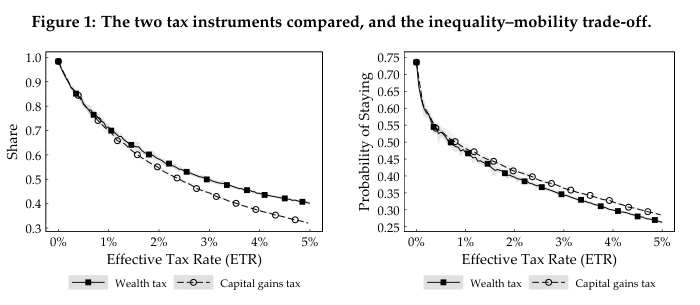

01
Inequality, perceptions & redistribution
How social environments, reference groups and privilege shape beliefs about inequality and support for redistribution.
I am an economist at the Economics Institute of the University of Bamberg, where I work at the Chair of International Economics. I work at the intersection of macroeconomics and public economics, with research on inequality, social and production networks, and how heterogeneous micro-level interactions shape aggregate outcomes.
My partner Anna Gebhard is also in academia and works at the intersection of mathematics and medicine (with some joint economics projects with me on the side).
I use analytical models, large-scale data, networks and computational methods to study how heterogeneity and interaction shape economic inequality, perceptions, market dynamics and aggregate fluctuations.
How social environments, reference groups and privilege shape beliefs about inequality and support for redistribution.
How sectoral interdependence propagates shocks and shapes inflation, distribution and aggregate fluctuations.
Agent-based models, network interaction, stochastic growth and the emergence of macro-level regularities.
Long-run corporate data, wartime inequality, regional development and institutional political economy.
Selected publications and current research across my main fields.

Humanities and Social Sciences Communications 13:631

Public Choice 207: 611–644

Structural Change and Economic Dynamics 74: 713–724

Manuscript · R&R at Journal of Economic Behavior & Organization

Journal of Economic Issues 59(3): 894–912

Working paper · version 10 September 2026
My teaching ranges from large undergraduate macroeconomics lectures to graduate inequality courses and interdisciplinary seminars on computational methods, the history of economic thought and political economy.